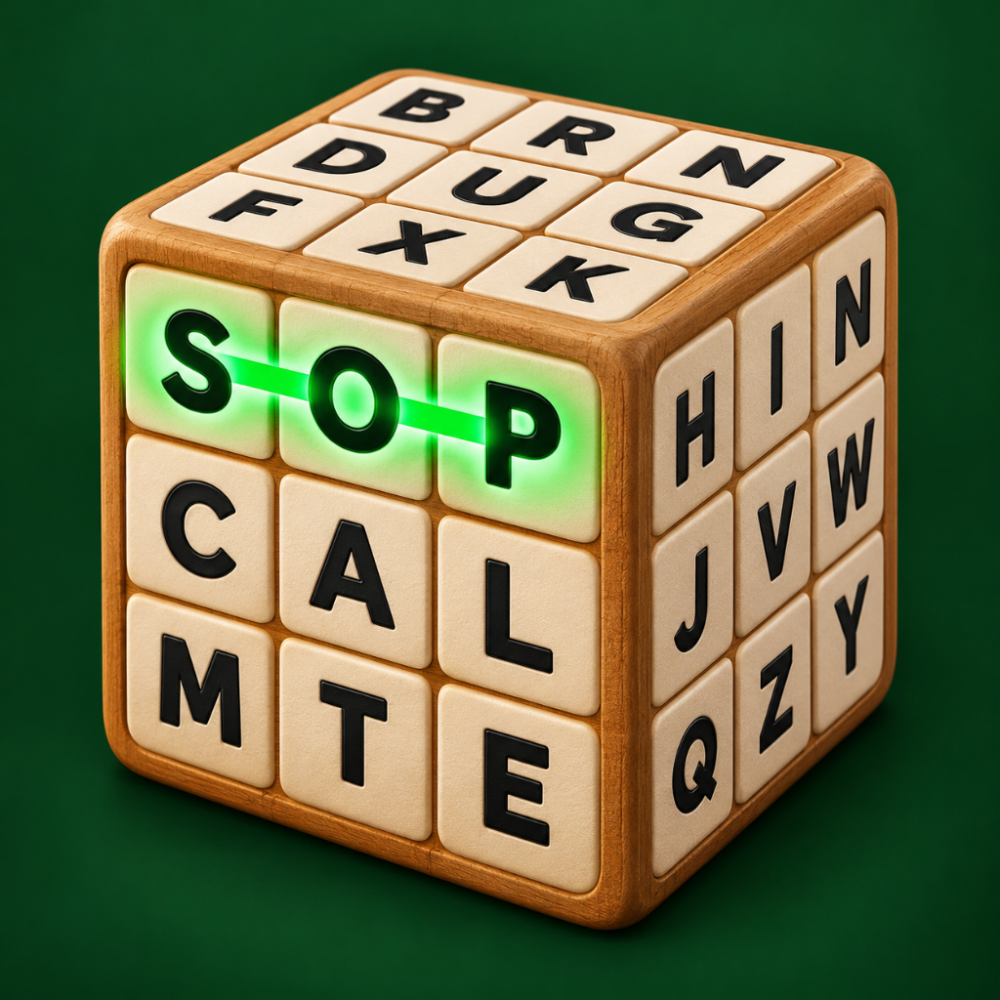

Krazel Games · Krazel Studio

Sopa de letras 3D
Words have depth, too. / Las palabras también tienen profundidad.
Support, privacy information and credits for the Krazel Games puzzle game. / Soporte, privacidad y créditos del juego de puzles de Krazel Games.
Support / Soporte · Privacy / Privacidad · Credits / Créditos